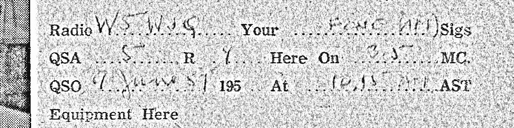

From Government House to G3MY: The QSL Cards of Prince Edward Island
The change of address
On 27 November 1958, a radio operator in Charlottetown took out a card bearing a photograph of his equipment. He drew a line through the address, 4 North River Road, and wrote “Government House.” Beside the picture he explained that it showed his old station. At noon Atlantic time he had exchanged signals with G3MY in England. He recorded the mode as two-way SSB, a form of voice transmission, and described his partly homemade transmitter. He signed the card Walter. The next morning it went by air mail to Bamford, near Sheffield.

The writer was Frederick Walter Hyndman, eight months into his term as lieutenant governor. There is another copy of his card in the collection, still bearing the North River Road address. The pair makes a small distinction possible: we can see the equipment he wanted another operator to know about, but the picture is not a photograph of a radio room at Government House. Walter himself took the trouble to say so.
He had been at this long before anybody called him Honourable. In an oral history recorded much later, Hyndman recalled learning wireless by going down to the ships and making friends with their operators. By his account he had his amateur licence by 1920; an operator aboard an American warship gave him tubes for an early transmitter. It is a good place to begin an Island story. Before radio carried his voice across the Atlantic, a ship had brought a part he needed into Charlottetown harbour.
Postcards in this section: #2086, #3002.
Office of the Lieutenant Governor, Frederick Walter Hyndman · F. Walter Hyndman’s own recollections in Signing On: The Birth of Radio in Canada (1982), pp. 38–41
Two stations on a February Sunday
On 13 February 1927, Angus H. Mackie in Summerside recorded a contact at 1:40 p.m. Atlantic time. His card gives the transmitter input as 25 watts and the plate voltage as 350. He put a two-cent stamp on it and addressed it to D. C. Sayer at Richmond Hill, Long Island. At 5:30 the same afternoon, J. Louis MacKay at Breadalbane recorded a different station on 40 metres. He described his antenna with the care of a carpenter giving measurements: a single wire thirty feet long and thirty feet high. Eight days later MacKay filled out another card, this time for NU-2GP. It is the same receiving call that Mackie had written on the Summerside card. Two Islanders had independently found the same listener on Long Island.

Only four years earlier, a two-way amateur exchange across the Atlantic had been an international event. In November 1923 Fred Schnell in Connecticut and Léon Deloy in Nice heard and answered one another. The difference between hearing a distant signal and having its sender hear you back was the whole achievement. The Breadalbane and Summerside forms show what happened once people began doing this regularly: an experiment once reported as news became a row of blanks that an Island operator could fill in at his own desk.
The operators called these acknowledgments QSLs. In the shorthand used over radio, QSL tells the other station that a transmission has been received; QSO is the contact itself. It is the difference between the conversation and the receipt. MacKay’s card tells the other operator how well the signal came through on a particular band, at a particular hour, using a particular arrangement of wire and valves. His date is the date of the contact. A cancellation, when there is one, tells us when the paper began its journey.
How could MacKay’s thirty feet of wire carry a signal beyond the horizon? On shortwave bands, signals can return to Earth by way of the ionosphere, the electrically charged upper atmosphere. The path changes with frequency and conditions. Hearing somebody yesterday did not promise a meeting today; a report from the far end told the sender something no amount of listening at home could settle. Mackie later wrote in the margin of another card that he had been licensed since 1922 and called his station an Island shortwave pioneer. His best evidence is more engaging than any claim to be first: turn over his 1927 card and there is somebody’s street address in New York.
Postcards in this section: #2826, #4072, #4070, #2706, #3001.
American Radio Relay League, the 1923 Schnell–Deloy transatlantic contact · NOAA Space Weather Prediction Center, how HF signals return via the ionosphere
Who else was on the dial?
A single call sign on three different backs brings a little Maritime circle into view. VE1EL in Moncton heard Edward Bridgewater of Breadalbane in December 1932, Angus Mackie of Summerside in January 1933 and Lou MacKay in March. A later card from Wylie Barrett supplies a name in type: W. E. Lockhart. The creases and scraps on these cards might make them less desirable as display pieces. Read them together, though, and a person emerges on the receiving end, patiently listening for Islanders.

The circle had its own manners. Lionel Ford at Emerald Junction sent a card to Glace Bay even though, he wrote, they hadn’t managed to finish the contact. On Pownal Street in Charlottetown, a maple-leaf card names George C. Coffin as operator, but the January 1936 message to White Plains is signed Carl. A small added stamp identifies Carl R. Prowse as second operator. A catalogue of station owners alone would miss the man who actually said hello.
Barrett, who billed himself as a “brass pounder from Spud Island,” put two cartoon operators on one of his designs. Brass pounding meant working a Morse key. His June 1937 card reports just ten watts input and 7148 kilocycles, or 7.148 MHz; from St. Eleanor’s the card went to Ernest L. Bracy Jr. in North Berwick, Maine. Barrett eventually wrote a 52-page history of Island amateur radio, now at the provincial archives. Here he is before he became its historian, thanking another man for a chat.
MacKay found yet another use for his card. A 1927 Breadalbane version advertises silver-black foxes and seed potatoes; a 1937 Summerside version puts a fox right above VE1AP. Turn it over and there is a printed invitation from the Summerside Board of Trade to come in person. Lou had made the contact. His town wanted the visitor.
Postcards in this section: #2700, #2701, #2702, #2703, #2986, #2772, #2108, #3790, #4073, #3172.
The woman listening in Rochester
Mrs. William F. Diesel of Rochester, New York, received a different sort of confirmation. The picture is of R. T. Holman’s department store in Summerside; a red label says her reception has been verified. On the back, station CHGS acknowledges that she heard its Sunday-morning DX broadcast. The fine print makes “morning” rather more impressive: the programme ran from 2:30 to 3:30, Atlantic time, on the first Sunday of each month from December through April. The reward for keeping those hours was a picture of the store whose signal she had caught.

DX was the pursuit of distance. The distinction here matters: CHGS was a broadcaster, and its card specifies 1120 kilocycles, on medium wave. Mrs. Diesel did not need a transmitter or a call sign. She needed a receiver, patience, and some way of telling Holman’s what she had heard. A 1932 card to Mrs. J. H. Boose of Curryville, Pennsylvania, asks for precisely that detail before the station will issue verification. Yet another Holman’s card goes to New Glasgow, Nova Scotia, where a listener’s kind words about W. H. Harding’s radio talks have encouraged him to carry on. The department store’s picture served all three exchanges.
Keith Rogers makes the bridge back to shortwave unusually plain. On a card posted in July 1939 he identifies himself as manager of Charlottetown’s CFCY. But the large red call sign above his name is VE1HI, and the bands he advertises are 14 and 28 megacycles. A New Jersey amateur could work Rogers directly on shortwave; a family tuning in his broadcast station was doing something else. One card carries both identities, with a drawing of a radio mast planted squarely on the Island.
Postcards in this section: #3772, #4658, #4104, #3528, #3144.
Canadian Communications Foundation, CHGS-AM station history · Canadian Communications Foundation, Keith S. Rogers
The silence, and the cards that came after
There is a break between Rogers’s 1939 card and the next amateur reports in this collection. A missing card by itself proves little. In this instance an order survives: on 5 September 1939, Ottawa notified Canadian amateur operators that their licences were suspended and directed them to dismantle their equipment. Ordinary amateur transmission stopped. This was not an order for every household to stop listening to broadcasts. The distinction between Rogers’s two call signs had acquired consequences.

Canadian amateur licences came back into force on 15 November 1945. A returning licence holder first had to obtain permission from a government radio inspector to go back on the air. A year and a day later, John G. Hambly on Highland Avenue in Charlottetown logged W8ANZ on 14 megacycles. He signed himself Jack. In February 1947 Howard Wyman in Summerside logged another contact at 10:25 at night and rated conditions only fair. His confirmation went to W1PEF, care of the U.S. submarine base at New London, Connecticut. A military address makes a striking destination, but the record he sent was an amateur’s: frequency, signal report, 35 watts input, regards to Ed.
The return to the air did not consign homemade ingenuity to the past. Ed Garnhum’s 1948 card carries a big red maple leaf and lists a receiver he explicitly labels RCAF surplus. His card went to Corpus Christi, Texas. Rogers, meanwhile, turned his 1949 QSL into a foldout. One panel lists receivers, antennas and former call signs; another shows the car ferry; a third shows Rogers himself. He wrote “20 m Phone” on the report. A recipient who unfolded it got a voice confirmation, a portrait and a small introduction to Prince Edward Island, all for the same postage.
Postcards in this section: #3144, #3455, #3168, #3150, #2030, #2439.
Department of Transport, order of 5 September 1939, preserved by Scarborough Amateur Radio Club · Canadian licensing announcement, QST, November 1945
Box L-692, Thibodaux, Louisiana
Spread the 1950s cards on a table and watch for W5WJQ. There he is on Bob Carr’s March 1957 report from Spring Park Road. There he is on a red card from Douglas Moser of Kent Street and a green one from the Rev. L. J. Ayers of North Rustico. Several backs give his name and address: Evert Halbach, Box L-692, Thibodaux, Louisiana. An Island collection, read from the other side, has become part of one man’s address book.

Those addresses can deceive in an interesting way. Thomas E. “Pete” Pederson’s card puts Cavendish in large type, gives a return address in Sheboygan, Wisconsin, and records a contact with Halbach on 27 September 1957. It is signed W9NLJ/VE1, a visiting operator’s call. The Green Bay, Wisconsin, cancellation is dated 5 November. For a map of the radio contact, put the pin at Cavendish. For a map of the card’s postal journey, start it in Wisconsin.
Look again at Carr. In March he hoped to see Evert in June. In June a second Carr card has W5WJQ followed by a mobile/VE1 notation and wishes him luck. On 13 April 1958, C. Ralph Arsenault, back on the 28-megacycle band, was surprised to make contact and hoped Evert would come to PEI again. Fred Burke wrote later that month; W. Stewart Smith had already sent a January report. The cards give us neither a travel diary nor an unbroken itinerary. What they do give us is stronger than a claim about global fellowship in the abstract: one fellow was expected in June, heard on the air, and invited back.
And there is one more Island operator in Evert’s circle. On Hyndman’s other card, 3002, the pencil is pale enough to disappear against the brown paper. Look closely at the top lines: W5WJQ, June ’57, with the North River Road address still in print. The exact day is harder to read, but the call and month put Walter in the same June cluster as Carr, Moser and Smith. Before the lieutenant governor wrote to Yorkshire, he had already been on the air with Evert.


Postcards in this section: #2928, #2863, #3173, #2930, #2483, #2069, #2905, #2696, #2906, #3111, #3002.
What Walter sent across the Atlantic
Come back to Government House at noon in November 1958, thirty-five years after the Connecticut–Nice exchange. Three decades earlier Lou MacKay had reported the length of a single wire in Breadalbane. Walter Hyndman now specified a homemade exciter with a Collins filter and a final amplifier running at 250 watts. His notation “two way SSB” tells us that each end could hear the other speak by single sideband. Beside the small black-and-white photograph of cabinets, dials and an empty chair, he explained that the picture came from his previous location. To the amateur in Yorkshire, these were courtesies: here is how you sounded, here is what I used, here is where to find me.

That the lieutenant governor was still part of this community is independently attested. In April 1959, The Canadian Amateur reported a Sydney club gathering at which a contact with Hyndman, VE1BZ, was one of the evening’s highlights. That was a different occasion from the English contact. Together the two records let us see the same man as a public figure singled out by a club, and as Walter, filling out one card for one other operator.
The last word need not belong to the best-known man. In July 1959 Harold Rodd sent a pink-and-blue map of PEI to Richmond, Virginia. He had given the frequency band, time and signal report, but still had something to add by hand: “Fine SIG Chas.” A fine signal, Charles. The ionosphere made the meeting possible. The reason we can still hear how pleased Hal was is that he put a stamp on it.
Postcards in this section: #2086, #3002, #2039, #3169.
The Canadian Amateur, April 1959: report from the Sydney Amateur Radio Club
Browse the complete radio card register
The collection has 54 amateur QSL records. There is contact or postal evidence from 1927–1959 for 44 of them. One is a blank station form and nine are later examples. Five related broadcasting cards follow. The date of a radio contact can differ from the day the card went through the mail.
- #2030 · VE1JE · Ed Garnhum. 26 Oct 1948. Charlottetown to Corpus Christi, Texas; receiver described as RCAF surplus.
- #2039 · VE1PE · C. D. Gillis. 30 Mar 1956. G3ATU, Sunderland, England; 14 Mc CW.
- #2069 · VE1NQ · George Shelfoon. 16 Nov 1957. W5WJQ, ten metres; mentions Evert by name.
- #2086 · VE1BZ · F. Walter Hyndman. 27 Nov 1958. Government House written over North River Road; G3MY, Bamford, England; posted 28 November.
- #2108 · VE1CW · Wylie Barrett. 1 Jun 1937. Ernest L. Bracy Jr., Maine. Ten watts input.
- #2239 · VE1ACL · Douglas V. Moser. 14 May 1953. Malpeque Road; indoor folded dipole. Postmarked 29 Sep 1954; he calls this his second QSL in the remarks.
- #2335 · VE1NQ · George Shelfoon. 5 Nov 1962. Later example; G8KS. Outside the story period.
- #2336 · VE1TY / VE1UA · B. K. MacEachern / J. J. (Jim) MacEachern. Mar 1971. Two call signs printed on opposite sides. Outside the story period.
- #2337 · VE1AHR · Arnie H. Bennett. 14 Feb 1966. Alberton to Horseheads, New York. Outside the story period.
- #2363 · VE1UA / VE1TY · J. J. (Jim) MacEachern / B. K. MacEachern. 1971. G8KS; numeric date on card. Outside the story period.
- #2365 · VE1ADV · Ralph Dickieson. 20 Nov 1971. Station at New Glasgow; G8KS. Outside the story period.
- #2439 · VE1HI · Keith S. Rogers. 1949. Folding card; VP9IJ, 20 m phone; mailed care of the U.S. Navy, March 1949.
- #2483 · VE1ADE · Rev. L. J. Ayers. 14 Nov 1957. North Rustico to Evert Halbach; signed Pere.
- #2696 · VE1AK · C. Ralph Arsenault. 13 Apr 1958. Voice at 28 Mc; hopes Evert will visit again.
- #2697 · VE1LV · Harold Rodd. 23 Jul 1960. Apologizes for late QSL. Outside the story period.
- #2698 · VE1KZ · Fulton B. Proude. Undated. Unfilled station card; no contact established.
- #2699 · VE1KZ · Fulton B. Proude. Jun 1957. Faint writing; station at 11 Green St.
- #2700 · VE1CO · Angus H. Mackie. 30 Jan 1933. VE1EL, Moncton; repeats the 1922 licence claim.
- #2701 · VE1BJ · Edward R. G. Bridgewater. 1 Dec 1932. VE1EL, Moncton; place printed “Bradalbane.”
- #2702 · VE1AP · J. Louis “Lou” MacKay. 29 Mar 1933. VE1EL, Moncton; Summerside return address.
- #2703 · VE1CW · Wylie Barrett. Jul 1936. Addressed by name to W. E. Lockhart, VE1EL, Moncton.
- #2706 · 1CO · Angus H. Mackie. 1928–29 entries. W6QL. Station-history claims and bands written in the margins. First May day indistinct; no need to settle it to date the series.
- #2772 · VE1HH · Geo. C. Coffin / Carl R. Prowse. Jan 1936. Prowse signs as Carl; addressed to White Plains, New York.
- #2826 · C1AP · J. Louis MacKay. 13 Feb 1927. 40 metres at Breadalbane; detailed antenna dimensions.
- #2863 · VE1ACP · Robert M. Carr. 26 Jun 1957. W5WJQ mobile/VE1 notation; handwritten regards.
- #2905 · VE1ZM · W. Stewart Smith. 20 Jan 1958. Evert Halbach, Thibodaux, Louisiana; 28 Mc.
- #2906 · VE1UQ · Fred Burke. 27 Apr 1958. Evert Halbach; posted from Charlottetown on 4 May.
- #2928 · VE1ACP · Robert M. Carr. 18 Mar 1957. Names Evert and anticipates June.
- #2930 · W9NLJ/VE1 · Thomas E. “Pete” Pederson. 27 Sep 1957. Cavendish contact with W5WJQ, Wisconsin return address and Wisconsin postmark.
- #2986 · VE1CZ · Lionel H. Ford. 30 Jul 1933. Emerald Junction to Glace Bay; explicitly says contact could not be completed.
- #3001 · C1BD · Ernest Wright. Feb 1928. Summerside to New Philadelphia, Ohio; 30 watts input; postmarked 21 February.
- #3002 · VE1BZ · F. W. Hyndman. Jun 1957; exact day uncertain. Faint pencil identifies W5WJQ, June ’57; confirmed with a local-contrast reading of the red channel. Printed North River Road address intact.
- #3111 · VE1ZM · W. Stewart Smith. 9 Jun 1957. W5WJQ/m, 75 metres.
- #3144 · VE1HI · Keith Rogers. 1939. W2FYO, Wyckoff, New Jersey. 14 and 28 Mc are the station’s printed bands; postmarked 10 July.
- #3147 · VE1UE · N. K. McLeod. 19 Jun 1971 (catalogue). Cascumpec; another Halbach card. Outside the story period.
- #3150 · VE1HC · Howard W. Wyman. 22 Mar 1947. Summerside to Portsmouth, Virginia; 50 watts input.
- #3153 · VE1MC · Douglas H. MacFarlane. 9 Mar 1974. Bedeque; outside the story period.
- #3168 · VE1HC · Howard W. Wyman. 16 Feb 1947. Summerside to W1PEF, care of the submarine base at New London, Connecticut.
- #3169 · VE1LV · Harold Rodd. 11 Jul 1959. Richmond, Virginia; Hal’s handwritten compliment to Chas.
- #3172 · VE1AP · J. Louis MacKay. 26 Nov 1937. Summerside Board of Trade invitation; mailed 27 Dec to Hackensack, New Jersey.
- #3173 · VE1ACL · Douglas V. Moser. 5 Jun 1957. 220 Kent St.; Halbach addressee. Postal marking says missent to Houma, Louisiana.
- #3434 · VE1PR · Allen MacKenzie. 18 Feb 1959. Nashville, Tennessee; 20 metres.
- #3455 · VE1IA · John G. Hambly. 16 Nov 1946. 14 Mc; W8ANZ; signs Jack.
- #3508 · VE1BJ · Edward R. G. Bridgewater. Feb 1934. To Orrington, Maine; postmarked at Crapaud.
- #3790 · VE1CW · Wylie Barrett. 20 Mar 1937. Elizabeth, New Jersey; cartoon design as on 2108.
- #4070 · C1AP · J. Louis MacKay. 21 Feb 1927. Breadalbane card to NU-2GP; same receiving call as Mackie’s 4072.
- #4072 · C-1CO · Angus H. Mackie. 13 Feb 1927. Summerside to Richmond Hill, Long Island; 25 watts input.
- #4073 · Canadian 1AP · J. Louis MacKay. 24 Jul 1927. Breadalbane card promotes silver-black foxes and seed potatoes.
- #4157 · VE1ADE · Rev. L. J. Ayers. 15 Nov 1958. North Rustico; 28 Mc, voice; CM6MS.
- #4201 · VE1GB · Stewart Hunter. 1 Jan 1935. Kensington to Providence, Rhode Island; posted 2 January.
- #4299 · VE1ARB · Janet Barwise. 6 Oct 1965. Charlottetown; 80 metres. Outside the story period.
- #4328 · VE1FT · James Fraser. 31 Dec 1933. Lodge Forest, Maryland; new-year greeting; posted 1 Jan 1934.
- #4340 · VE1KZ · Fulton B. Proude. 14 Oct 1954. 11 Green St. to Rolla, Missouri.
- #4485 · VE1CZ · Lionel H. Ford. 22 Nov 1933. Emerald Junction to Cleveland Heights, Ohio.
Broadcasting cards
- #1884 · A 1940 greeting mentions a planned visit to CFCY.
- #3528 · Holman’s store and station CHGS on the front. This copy carries no written reception report.
- #3772 · Station CHGS confirms a reception report from Mrs. Diesel in Rochester, New York.
- #4104 · W. H. Harding thanks a listener in New Glasgow for remembering his radio talks, 1932.
- #4658 · CHGS asks a Pennsylvania listener for programme details, 1932.